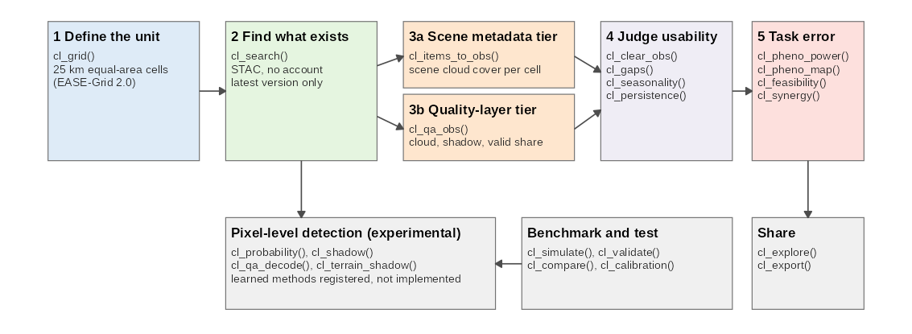
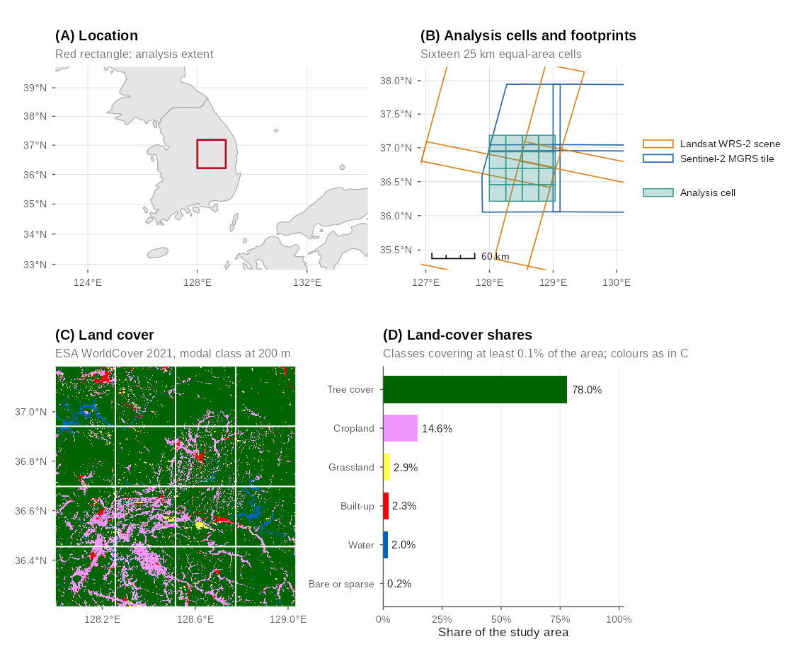
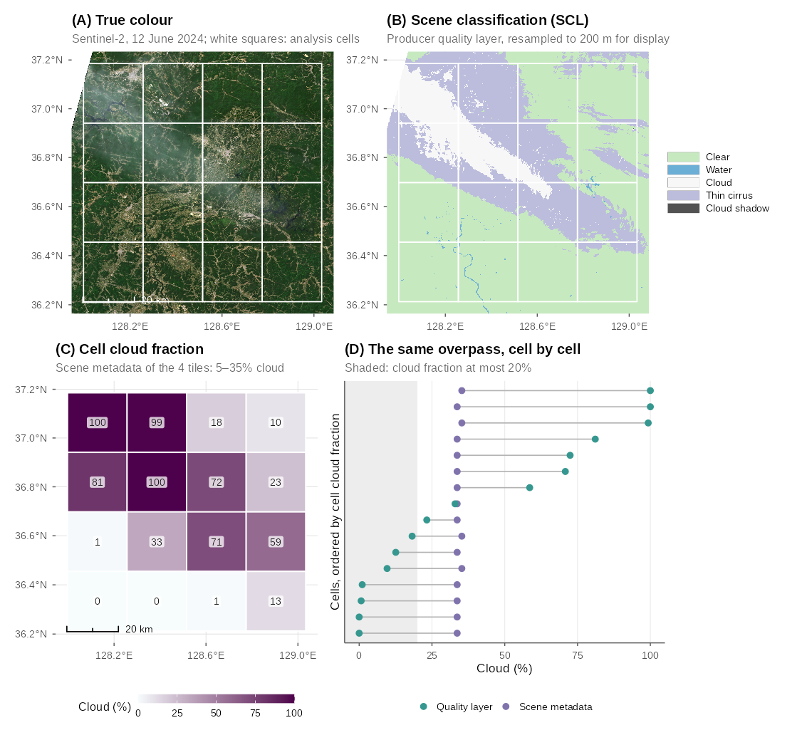
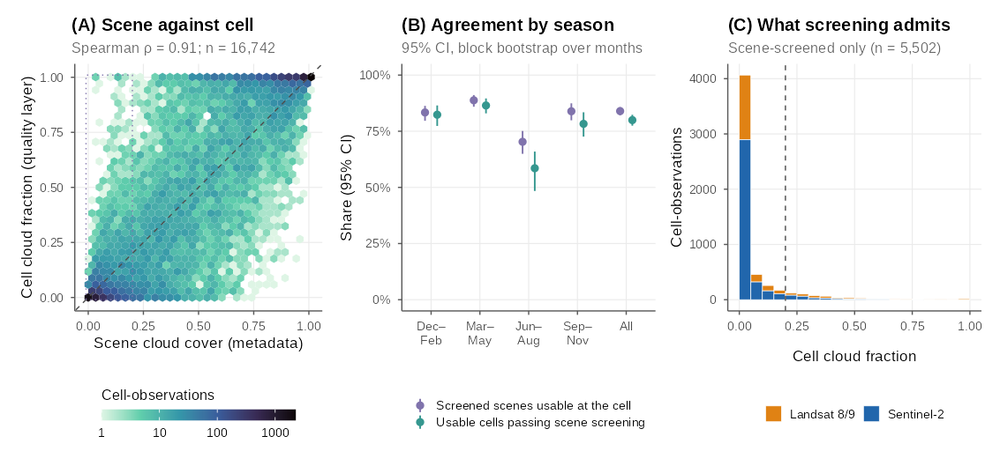
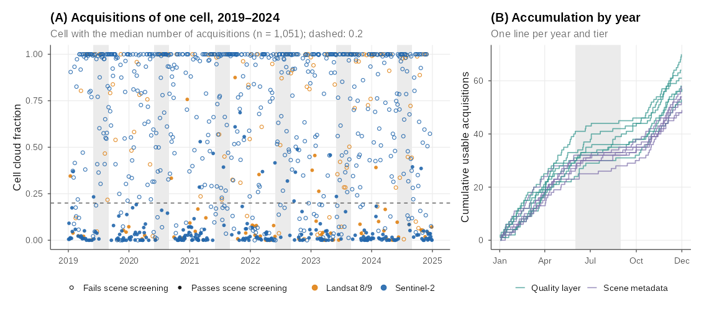
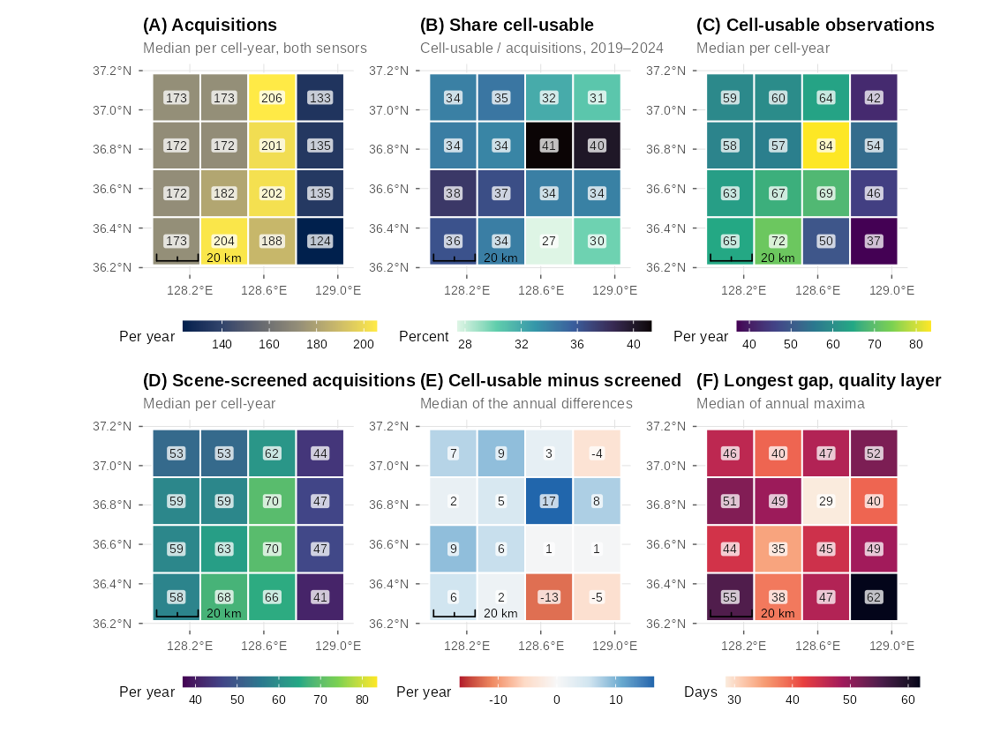
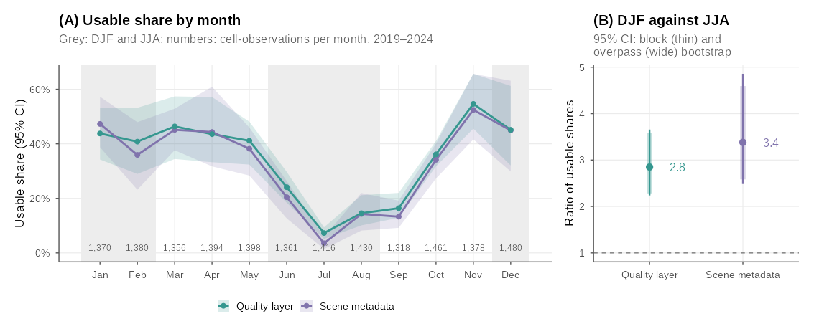
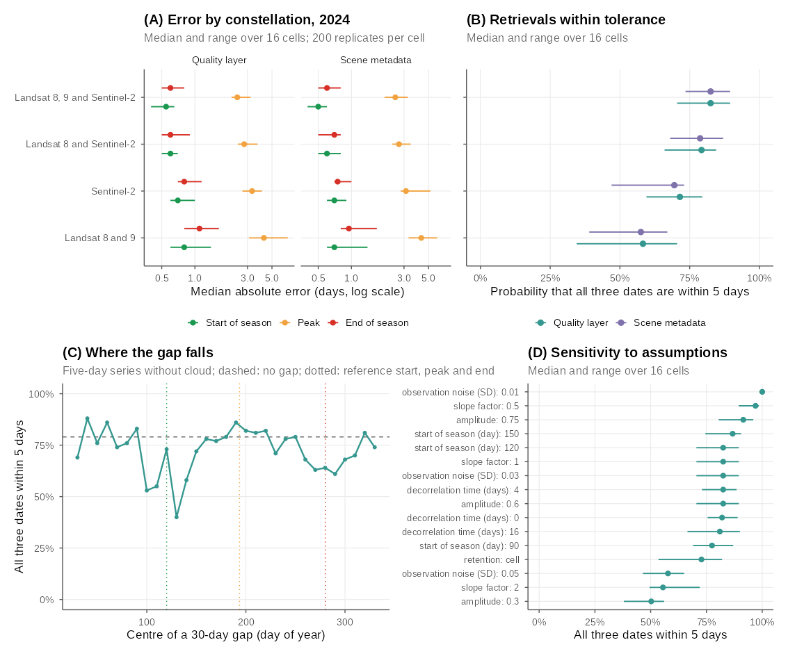
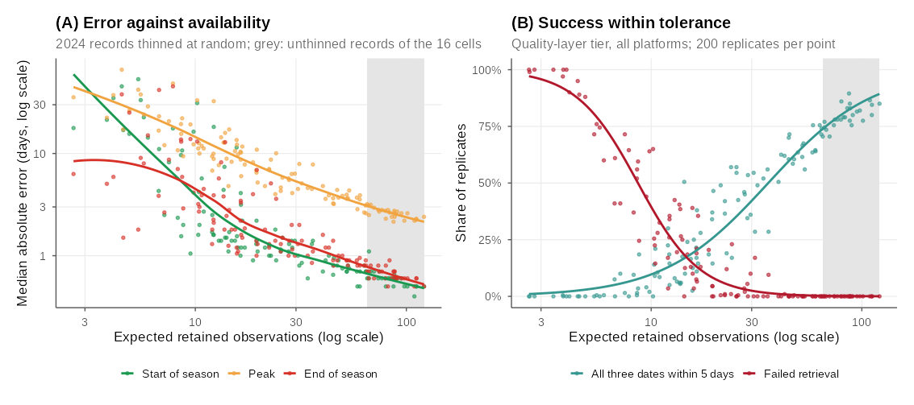

Clear-observation availability and cloud analysis for optical satellite image time series.
Cloud masks tell you which pixels are cloudy. Planning a time-series study also needs three other answers: how many usable observations remain at the study site, when in the year they occur, and how the gaps affect the quantity you want to estimate. cloudscape links these steps in one R workflow:
- it queries SpatioTemporal Asset Catalogs (no account needed) and keeps the latest processing version of every acquisition;
- it aggregates acquisitions onto an equal-area grid (EASE-Grid 2.0), so counts refer to the same area for every sensor and latitude;
- it records the evidence tier of every count: usability inferred from scene-level cloud cover, or measured within each grid cell from the producer quality layers (Landsat
QA_PIXEL, Sentinel-2SCL); - it summarises usable counts, gaps, seasonality and cloud persistence, with every statistic carrying its unit, sample size and denominator;
- it propagates an acquisition record into the simulated error of phenological dates (start, peak and end of season) under stated assumptions.

Installation
# install.packages("remotes")
remotes::install_github("ehsanrahimi666/cloudscape")The statistical core depends only on base R. terra, sf and httr2 are suggested and loaded only when raster or network functionality is used, so the package installs and runs its test suite without a GDAL toolchain.
How it works: a worked example at Andong, Republic of Korea
The figures below come from the analysis in analysis/, which reproduces every number of the accompanying article from archived inputs (Sentinel-2 and Landsat 8/9, 2019–2024, sixteen 25 km cells).
1. Define an equal-area study area and find what exists
library(cloudscape)
grid <- cl_grid(res = 25000) # EASE-Grid 2.0, 25 km cells
site <- cl_grid_cells(grid, cl_grid_lookup(grid, 128.73, 36.57))
cells <- as.vector(outer((site$row + -3:0) * grid$ncol, site$col + -2:1, "+"))
xy <- cl_grid_cells(grid, cells)
ll <- cl_unproject(range(xy$x) + c(-1, 1) * grid$res / 2,
range(xy$y) + c(-1, 1) * grid$res / 2)
aoi <- c(ll[1, "lon"], ll[1, "lat"], ll[2, "lon"], ll[2, "lat"])
items <- cl_search(aoi, "sentinel-2-msi", "2019-01-01", "2024-12-31", limit = Inf)Landsat scenes and Sentinel-2 tiles cover the same ground with footprints of different size and placement; the grid cells do not change between sensors.

2. Scene metadata or quality layers?
meta <- cl_items_to_obs(items, grid) # scene-level cloud cover, every covered cell
qa <- cl_qa_obs(items, grid, cells) # cloud fraction measured within each cellA scene’s cloud cover is an average over its footprint. On the overpass below (12 June 2024), the four Sentinel-2 tiles report 5–35% cloud and every cell inherits 34–35% from them, so no cell passes a 20% screen. The quality layer shows that six of the sixteen cells were usable, with at least 80% of the cell observed and cloud-free, and others were completely overcast.

Across all acquisitions, the two evidence tiers can be compared directly, with confidence intervals from a block bootstrap over calendar months:

3. How many usable observations, where and when?
cl_clear_obs(qa, by = "year") # usable observations per cell and year
cl_gaps(qa, critical = 21) # longest stretch without a usable observation
cl_seasonality(qa, harmonics = 2) # seasonal cycle and best acquisition window
cl_persistence(qa) # decorrelation time, with and without the seasonal cycle



4. What does the record mean for phenology?
pheno <- cl_pheno_map(qa, year = 2024, n_sim = 200, threshold = 0.2,
noise = 0.03, tau = 1, seed = 20241)Each cell’s actual acquisition dates, cloud fractions and valid shares are used to sample a known double-logistic trajectory, which is refitted 200 times; cloud losses are correlated over the actual intervals between acquisitions with a decorrelation time tau (days). The result is the conditional retrieval error, in days, of the start, peak and end of season, the share of failed retrievals, and the probability that all three dates fall within a tolerance (5 days by default). These values depend on the assumed curve, noise and cloud persistence; they describe the information in the acquisition record, not the accuracy of a retrieval from real data.

Thinning the 2024 records at random relates the conditional retrieval error to the number of retained observations: failures and the errors of the start and end of season fall steeply as the number of observations per year increases and change little beyond a threshold, whereas the error of the peak keeps decreasing.

Quick start without a network connection
library(cloudscape)
d <- seq(as.Date("2024-01-01"), as.Date("2024-12-31"), by = "5 days")
for (cf in c(0.3, 0.6, 0.85)) {
r <- cl_pheno_power(d, cloud_fraction = cf, n_sim = 200, seed = 1)
print(round(r$summary[, c("n_retained_median", "sos_mae", "peak_mae",
"eos_mae", "failure_rate", "p_within_all")], 2))
}
#> n_retained_median sos_mae peak_mae eos_mae failure_rate p_within_all
#> 1 52 0.7 3.65 0.7 0 0.62
#> n_retained_median sos_mae peak_mae eos_mae failure_rate p_within_all
#> 1 30 1 4.95 1.1 0.01 0.5
#> n_retained_median sos_mae peak_mae eos_mae failure_rate p_within_all
#> 1 11 3.2 12.8 3.4 0.34 0.09Statistics carry their units and are checked on construction:
Sensors and detection methods
Drivers are supplied for Landsat 4–9, Sentinel-2, MODIS and a generic multispectral camera (PlanetScope, WorldView, SPOT, RapidEye, UAV). Adding a sensor means writing one driver:
cl_sensor_register(cl_sensor_driver(
id = "my-sensor", name = "My camera",
bands = c(blue = "B1", green = "B2", red = "B3", nir = "B4"),
revisit = 5))
cl_methods(sensor = "my-sensor") # which algorithms are applicable| Method | Type | Status in 0.3.0 |
|---|---|---|
qa |
Producer mask | Implemented: decodes CFMask QA_PIXEL and Sen2Cor SCL
|
threshold |
Physical | Implemented: brightness and whiteness baseline |
fmask |
Physical | Implemented: decision cascade following Zhu and Woodcock (2012) |
s2cloudless, randomforest, xgboost, unet
|
Learned | Registered, not implemented; no model weights are distributed |
The pixel-level detectors, the shadow search and the scene simulator are verified against analytical identities and synthetic scenes, but they have not been validated against labelled imagery; treat them as experimental. A trained model can be supplied through cl_method_register().
Reproducing the article’s analysis
From the repository root, Rscript analysis/run_all.R runs every step of the analysis from the archived inputs in analysis/data/ (catalogue records, quality-layer extracts, land cover and image subsets), each in a fresh R session, without a network connection; analysis/config.R holds every setting. Rscript analysis/run_all.R --fetch first queries the catalogue and reads the quality layers again; the remote archives can change, so a fetched record can differ from the archived one. Rscript analysis/check_reproduction.R <reference> compares a new run with a copy of the archived analysis/output/, and the reproduce-analysis workflow repeats the run and the comparison on a clean GitHub-hosted runner.
Citation
Rahimi, E. and Jung, C. cloudscape: clear-observation availability and cloud analysis for optical satellite image time series. R package version 0.3.0. https://github.com/ehsanrahimi666/cloudscape